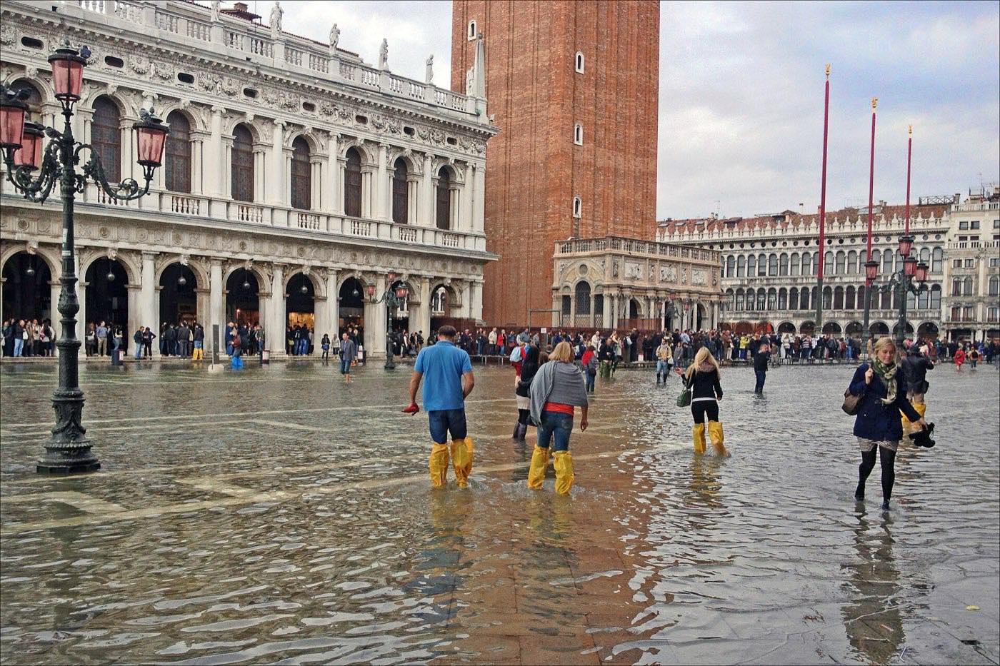
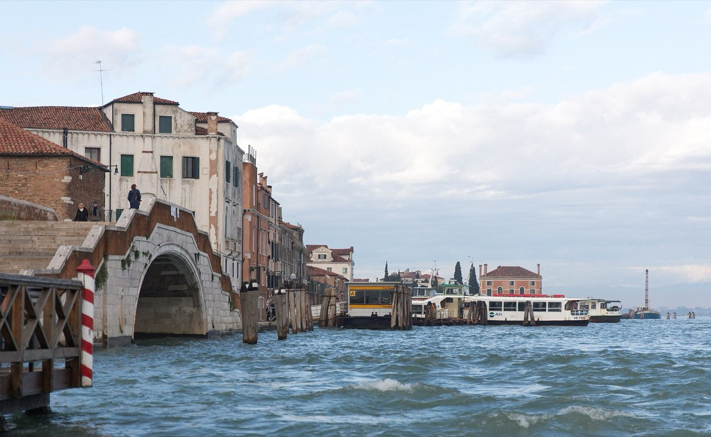
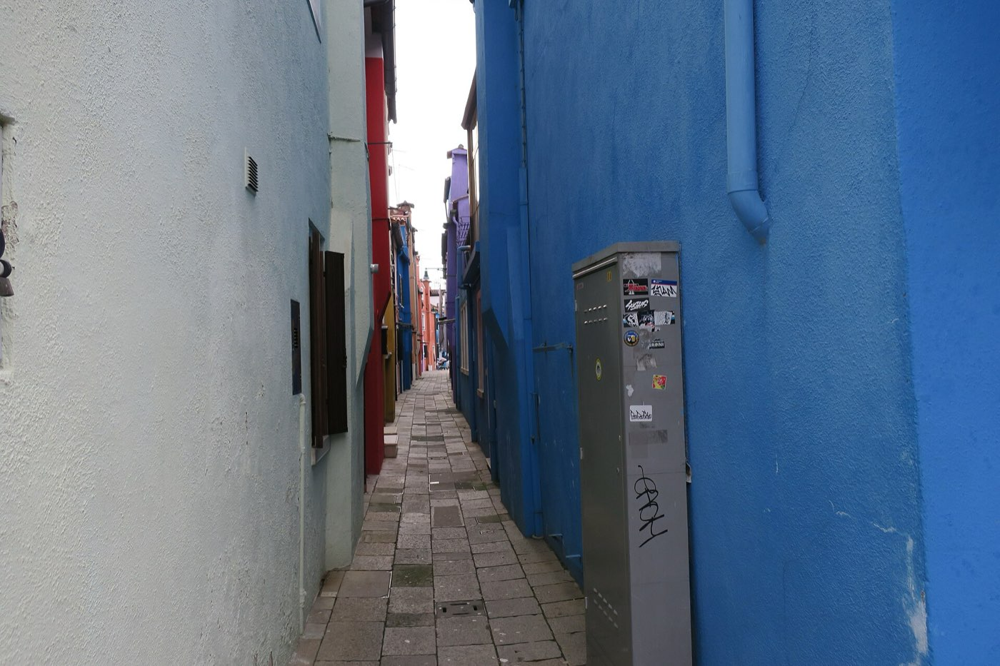

Venice · 3 days
3 Days in Venice: What You Actually Have to See
Venice has no roads, so every distance on the map is really a boat timetable. Burano sits forty-five minutes out, and the boat that goes there leaves from Fondamente Nove on the north shore, nowhere near St Mark's. That is why the lagoon islands take a whole day and never an afternoon. The second clock is the tide: from roughly October to March the water comes up through the drains, and Piazza San Marco, the lowest ground in the city, goes under first and drains again within a few hours. Both clocks are published days ahead. Three days planned around them works. Three days planned off a map does not.

Three days covers Venice properly, and it splits cleanly into three pieces: the San Marco core, the lagoon islands, and the stretch of Dorsoduro and San Polo on either side of the Grand Canal. What decides the order is not walking distance. The historic centre is barely three kilometres end to end and almost everything in it is close to everything else. The order comes from water, on two separate schedules that both get published before you travel.
The first is the boat timetable. Vaporetti are the buses here, and the map flattens distances that the timetable does not. Line 12 to the outer islands leaves from Fondamente Nove, on the north shore facing open lagoon, which is a twenty-minute walk from Piazza San Marco before the journey has started. From that pontoon it is ten to fifteen minutes to Murano, about forty-five to Burano and roughly seventy to Torcello. Those numbers are one way. Add the walk out, the wait for a boat and the trip home, and the islands have eaten a day. This is the single most common way a three-day Venice plan falls apart: the islands get pencilled in as an afternoon and then swallow everything around them.
The second is the tide. Acqua alta runs mainly from October to March, floods only the lowest twelve percent of the city, and lasts two to four hours before the water withdraws through the same drains it came up. Piazza San Marco is the lowest ground in Venice and goes under first. The MOSE barriers at the lagoon mouths have been working since 2020 and they do stop the serious floods, but they are raised at 110 cm and the paving in front of the Basilica is wet well below that. So MOSE has not taken the square off the tide clock, it has only removed the worst days from it. Between mid-September and the end of April the city lays raised walkways, the passerelle, along the main routes, and the tide forecast is published a few days out. Check it the night before and put San Marco on the drier half of the day.
Three fixed points in the week sit on top of both clocks. St Mark's Basilica does not open until 2pm on Sundays, because the morning belongs to mass. The Rialto fish market is shut on Sundays and Mondays. The Gallerie dell'Accademia closes at 2pm on Mondays, and the Peggy Guggenheim Collection closes all day on Tuesdays, so the two Dorsoduro galleries never both have a full day at the same time. Everything below is written for a Friday-to-Sunday trip and says where another set of dates moves it.
Two water clocks, both published in advance. The boat timetable decides that the islands are a whole day and that the day starts from the wrong side of the city. The tide table decides which half of a winter day Piazza San Marco is worth standing in. Look up both before you fix anything else, then hang the sightseeing off them. Distance is the one thing in Venice that does not need planning around.
Day 1 — San Marco, timed to the tide and the Sunday clock
The first day stays inside a few hundred metres and is entirely about getting past doors. St Mark's Basilica now runs on timed entry booked online, and the slot is the least of it. The dress code is enforced at the door, shoulders and knees covered, and a booked ticket does not soften it; anyone turned away loses the slot as well as the queue. Large bags and backpacks are not allowed inside either, and the cloakroom is a separate errand a short walk away. Turning up at your slot with a daypack is the standard way to waste an hour. Opening is 9:30am to 5:15pm Monday to Saturday with last entry at 4:45pm, and 2pm to 5:15pm on Sundays. The interior is dim and free of natural light for most of the day, which is worth knowing when choosing a slot: the mosaics only really fire when the lights are on.
The Pala d'Oro behind the altar and the Museum with the loggia and the original bronze horses are ticketed separately from the nave. The loggia is the one to add. It puts you outside on the balcony over the Piazza, level with the copies of the horses, which is a better vantage point than the interior offers and takes ten minutes.
The Doge's Palace next door is open daily except Christmas Day and New Year's Day, from 9am to 6pm between November and March and to 7pm from April to October, with last admission an hour before closing. From 1 May to 26 September 2026 it also stays open until 11pm on Fridays and Saturdays, last admission 10pm, which is the best ticket in the city on a hot evening and almost nobody takes it. The Bridge of Sighs is crossed from the inside on that route, which is the only way to see it that is not a scrum on the Ponte della Paglia.
Skip the queue for the Campanile in the Piazza. The view from it is the view of Venice without the Piazza in it, and the wait is the longest in the city. Take vaporetto line 2 across to San Giorgio Maggiore instead, five minutes over the water, and go up the campanile there. The panorama includes San Marco, the Doge's Palace and the whole waterfront, which is what people actually wanted, and the queue is a fraction of the size.
The must-sees
One square, three doors, and a boat at the end of it. On a Sunday the Basilica moves to the afternoon and everything else shifts back an hour.

Day 2 — The lagoon, on the boat timetable
Day two is the one that has to be given up whole, and it is worth it. Three islands sit on the same line and they are not variations on each other: Murano makes glass, Burano is a fishing village painted in flat blocks of colour, and Torcello is the ruin the other two came from.
Run the day backwards from how it is usually described. The standard advice is Murano first, because it is nearest, and that is exactly why the mid-morning boats out of Fondamente Nove are full. Ride straight past it instead. Take an early line 12 to Burano, about forty-five minutes, and arrive before the day-trip boats do. From Burano, Torcello is a five-minute hop. In high season line 9 shuttles between the two continuously; in winter only line 12 serves Torcello and the crossings thin out, so check the board at the Burano pontoon before wandering off. Then take Murano on the way home in the afternoon, when it is fifteen minutes from your bed and the glass workshops are still open.
Torcello is the reason the day is worth a whole day. Santa Maria Assunta was founded in the seventh century, which makes it older than anything in Venice proper, and the west wall holds a Byzantine Last Judgment in mosaic that has no equal in the city. Fewer than a dozen people live on the island now. The walk from the pontoon along the canal to the church takes about ten minutes and passes almost nothing, which is the point.
On Burano, walk two lanes back from the main fondamenta. The waterfront is where every photograph is taken and where every visitor stands; the back lanes are the same colours with nobody in them. What to skip: the men selling glass-factory tours at the Murano pontoon, and any lace sold in a Burano gift shop at a price that could not possibly cover the hours. The access fee, when it is running, does not apply to the islands at all.
The must-sees
Furthest first, nearest last. It is the opposite of what most itineraries say and it is why you get Burano before the crowd does.

Day 3 — The Grand Canal, the market and Dorsoduro
The last day uses the Grand Canal as a corridor and crosses it twice. Start at the Rialto market, which is a working market and keeps working hours. The produce stalls run Monday to Saturday from about 7:30am to 1pm, and the pescheria beside them runs Tuesday to Saturday on the same hours. It is closed on Sundays and Mondays, so a Sunday or Monday here means starting on the water instead and picking the market up on another morning, if the dates allow it at all.
Then ride the Grand Canal on line 1. It stops everywhere, which is the point: it is slower than line 2, and slower is what you want when the journey is the sight. An ordinary vaporetto ticket covers it, and the outdoor seats at the stern are the ones to aim for. This is the canal cruise, and it costs the same as any other bus ride.
Cross the canal at least once on a traghetto. These are working gondolas that ferry people across at seven points where there is no bridge, they take about five minutes standing up, and they cost around two euros. A hired gondola runs about eighty euros for thirty minutes in the daytime and a hundred after 7pm. The traghetto is the same boat, the same water and the same two oarsmen. Whether the hired version is worth the difference is a real question and the answer depends on what you came for, but almost nobody is told the cheap version exists.
Give the afternoon to Dorsoduro and let the weekday choose which door. The Gallerie dell'Accademia holds the Venetian painters, opens 8:15am to 7:15pm Tuesday to Sunday, and shuts at 2pm on Mondays. The Peggy Guggenheim Collection, ten minutes further along the same bank, opens daily from 10am to 6pm and closes on Tuesdays. On a Monday, do the Accademia first thing and the Guggenheim after lunch. On a Tuesday the Guggenheim is out and the Accademia has the whole day. Finish on the Zattere, the long southern quay that gets the last of the light, or at the Punta della Dogana where the canal meets the basin. Both are free and neither needs booking.
The must-sees
Two crossings of the Grand Canal and one long slow ride down it. The weekday decides the afternoon.
What to book, and what the day of the week does
| What | Booking | So |
|---|---|---|
| St Mark's Basilica | Timed entry, online, ahead | 9:30am to 5:15pm Monday to Saturday, last entry 4:45pm. Sundays 2pm to 5:15pm only. Dress code enforced at the door and large bags refused |
| Doge's Palace | Online, or on the door out of season | Daily from 9am, to 6pm in winter and 7pm in summer, last admission an hour earlier. Late to 11pm on Fridays and Saturdays, 1 May to 26 September 2026 |
| Line 12 to the islands | Nothing to book, but read the timetable | From Fondamente Nove: Murano 10 to 15 minutes, Burano about 45, Torcello about 70. Line 9 links Burano and Torcello in high season only |
| Vaporetto tickets | Buy the pass, not singles | A single is €9.50 for 75 minutes. Day passes run €25 for one day, €35 for two and €45 for three. Two island trips already beat singles |
| Rialto market | Nothing to book | Produce Monday to Saturday, fish Tuesday to Saturday, about 7:30am to 1pm. Closed Sundays and Mondays |
| Gallerie dell'Accademia | On the door is usually fine | Tuesday to Sunday 8:15am to 7:15pm. Mondays it closes at 2pm |
| Peggy Guggenheim Collection | Online in summer | Daily 10am to 6pm. Closed Tuesdays |
| The access fee | Booked online when it applies | The 2026 trial ran on set dates between 3 April and 26 July and ended on 27 July. It has been run as a trial each spring since 2024, so check before booking spring dates |
What three days does not cover
Cutting on purpose beats running out of day. These want more room than this trip has:
- The Scuola Grande di San Rocco — a room-sized Tintoretto cycle he spent more than twenty years on, and the best single interior in Venice after the Basilica. It needs an unhurried hour that this itinerary has already spent in Dorsoduro.
- The Biennale at the Arsenale and the Giardini — on in alternate years from spring to autumn, and a full day on its own. Anyone visiting in a Biennale year should plan four days, not three.
- The Ghetto in Cannaregio — the oldest in Europe, with a museum and synagogues that are visited on a guided tour at fixed times. Worth a morning, and a morning is what day two is already using.
- The Lido — a real beach twenty minutes away by boat, and a completely different day. It belongs to a longer or hotter trip.
- Padua and Verona — half an hour and an hour away by train. Both are genuinely good and both cost a day of a three-day trip. If Italian city days are the point, Florence and Rome are better placed to absorb one.
Common questions about 3 days in Venice
Is 3 days enough for Venice?
Yes, and it is close to the right number. Three days covers St Mark's Basilica and the Doge's Palace, a full day in the lagoon at Burano, Torcello and Murano, the Grand Canal by public boat, the Rialto market and the Dorsoduro galleries. What three days cannot absorb is a mainland day trip. Padua and Verona each cost a whole day, and taking one leaves the lagoon half seen. The other limit is the calendar rather than the clock. A Biennale year adds a full day at the Arsenale and the Giardini, and a trip that lands on a Sunday loses the Basilica until 2pm and the Rialto fish market entirely.
When does Venice flood, and does acqua alta ruin a trip?
The high-water season runs mainly from October to March. A typical event floods only the lowest twelve percent of the city and lasts two to four hours before draining away, so it is closer to a tide than a disaster. Piazza San Marco is the lowest ground in Venice and floods first, which is why the photographs always show the same square. The MOSE barriers have been operating since 2020 and stop the serious floods, but they are raised at 110 cm and the paving in front of the Basilica is under water below that threshold, so the square still gets wet. The city publishes a tide forecast a few days ahead and lays raised walkways, the passerelle, along the main routes between mid-September and the end of April. Check the forecast the night before, pack boots you can walk in, and put San Marco on the drier half of the day.
Do you have to pay an access fee to enter Venice?
Only on set dates, and not at the moment. The 2026 trial ran on about sixty dates between 3 April and 26 July, charging day visitors aged 14 and over between 8:30am and 4pm. It ended on 27 July 2026, and since then the city has been free to enter with nothing to book. The fee has been run as a spring trial every year since 2024, so anyone booking April to July dates should check the official calendar before travelling. Two things stayed constant across the trials: overnight guests are exempt because the accommodation tax already covers them, and the charge never applied to Murano, Burano, Torcello or the Lido.
How long does it take to get to Murano, Burano and Torcello?
From Fondamente Nove on the northern edge of the city, line 12 takes ten to fifteen minutes to Murano, about forty-five to Burano and roughly seventy to Torcello. Those are one-way times and they do not include the walk to the pontoon, which is around twenty minutes from Piazza San Marco. That is why the islands are a full day and not an afternoon. The efficient order is the reverse of the usual advice: ride straight out to Burano on an early boat, hop across to Torcello, then stop at Murano on the way home when it is a quarter of an hour from your bed instead of three quarters. In high season line 9 shuttles between Burano and Torcello; in winter only line 12 runs and the gaps between boats get long.
Do you need to book St Mark's Basilica in advance?
Yes. Entry is timed and booked online, and slots go early at weekends and from April to October. Booking is only half of it, though. The dress code is enforced at the door, shoulders and knees covered, and being turned away costs the slot as well as the wait. Large bags and backpacks are refused too, and the cloakroom is a separate walk away, so deal with the bag before joining the queue. Opening is 9:30am to 5:15pm Monday to Saturday with last entry at 4:45pm, and 2pm to 5:15pm on Sundays. The Pala d'Oro and the Museum with the loggia and the original bronze horses need separate tickets, and the loggia is the one worth adding.
Is a gondola ride worth it in Venice?
Two versions of it exist and only one of them is oversold. A hired gondola is about eighty euros for thirty minutes in the day and a hundred after 7pm, for up to five or six people, and it is a real thing rowed by a real gondolier. The alternative almost nobody mentions is the traghetto: a working gondola that ferries people across the Grand Canal at seven points where there is no bridge, standing up, in about five minutes, for roughly two euros. Same boat, same water, two oarsmen instead of one. Take a traghetto first. Anyone who still wants the long version afterwards will at least know what they are paying eighty euros for.
What is closed on Mondays in Venice?
Less than in most Italian cities, but the closures land awkwardly. The Rialto fish market is shut on Sundays and Mondays, and the produce stalls beside it are shut on Sundays. The Gallerie dell'Accademia opens on Mondays but closes at 2pm instead of 7:15pm. St Mark's Basilica, the Doge's Palace and the Peggy Guggenheim all open normally on a Monday, and the Guggenheim's dark day is Tuesday instead. So a Monday in Venice works as a Dorsoduro day if the Accademia goes first thing, and the market moves to another morning.
Is a vaporetto pass worth it for 3 days?
For this itinerary, yes, and it is not close. A single ticket is €9.50 and lasts 75 minutes, while passes run €25 for one day, €35 for two days and €45 for three. The island day alone uses three or four separate boats, and that is before the line 1 ride down the Grand Canal and the crossing to San Giorgio Maggiore. Two return trips have already paid for a day pass. The passes cover the island routes as well as the city ones, so there is nothing extra to buy for Murano, Burano or Torcello.
Tailored to your trip
Travelling to Venice? Plan your trip around your real arrival and departure times.
Download iOS App